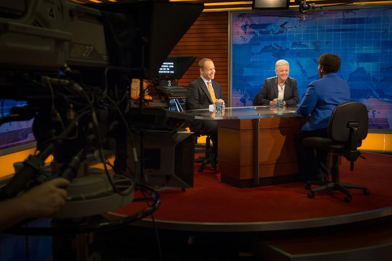

GRIEVANCE XVII ◆ FREEDOM OF EXPRESSION
He has sought to extinguish institutions established to inform the public without commercial or partisan command.
THE RECORD SHOWS
After Trump pressed to strip federal support from public broadcasting, Congress rescinded funding and the Corporation for Public Broadcasting moved toward closure.

The White House alleged bias and waste; supporters of public broadcasting warned of losses to local journalism, educational programming, and emergency information. Congress enacted the rescission in July 2025.
A DOCUMENTED SEQUENCE
3 MILESTONES- May 2025Trump ordered the Corporation for Public Broadcasting to cease federal support for NPR and PBS.
- July 2025Congress passed and Trump signed a rescission that removed $1.1 billion designated for public broadcasting.
- August 2025The corporation announced it would wind down its operations, affecting a network of local stations.